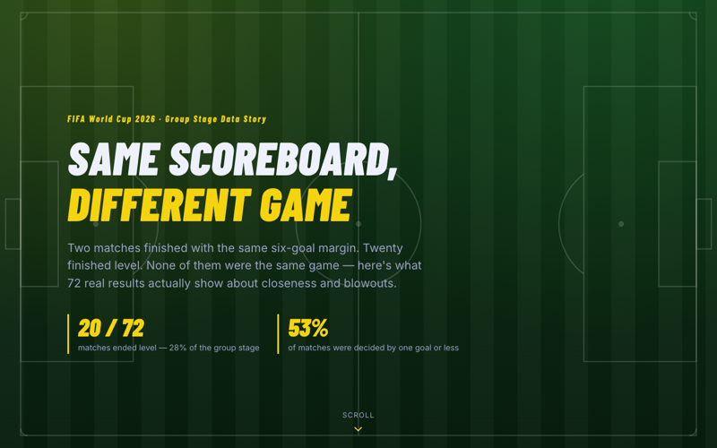
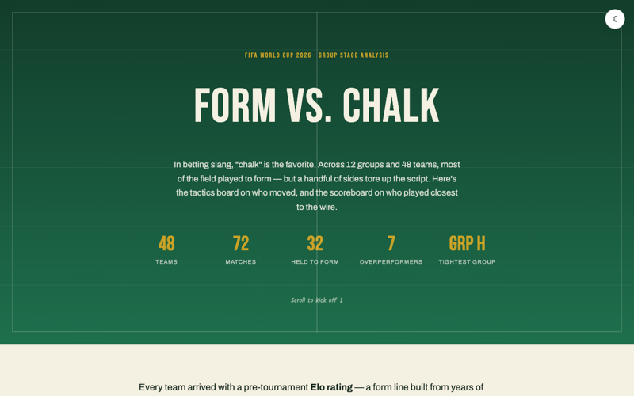
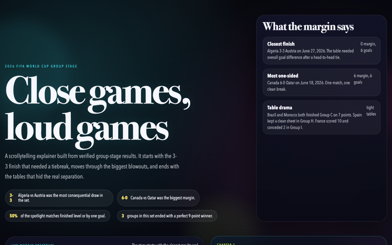
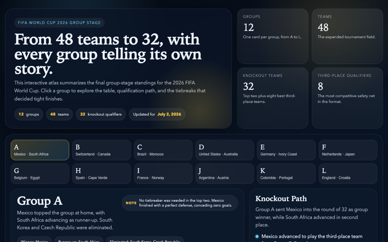
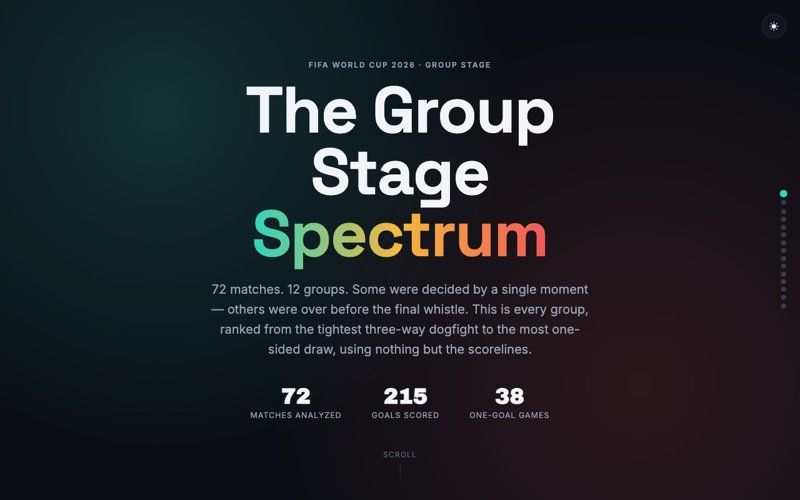
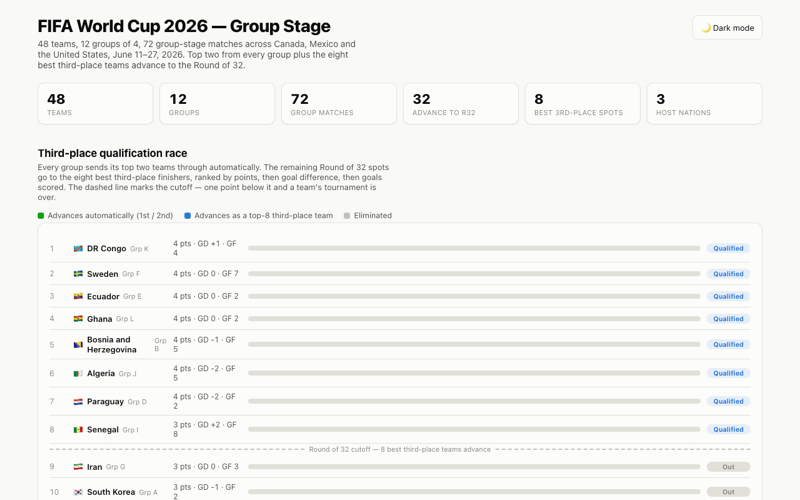

Same Scoreboard, Different Game
All 72 matches plotted on a margin spectrum, then zoomed into the 20 draws; insight: draws aren't equal — 53% of all matches were decided by one goal or less, and Algeria 3–3 Austria stands alone as the only high-scoring draw among 20.

Form vs. Chalk
Plots all 48 teams' pre-tournament Elo expectation against actual finish alongside the same closeness spectrum; insight: most teams (33/48) finished exactly as expected, but standout upsets like South Africa and Cabo Verde jumped two spots while Group H was both the tightest group and home to one of the biggest overperformers.

Close games, loud games
A scrollytelling walk through the closest, most one-sided, and most consequential group-stage matches; insight: closeness isn't just about who won — the "loudest" (highest-scoring) games weren't always the closest ones.

Group Stage Atlas
A group-by-group atlas of all 48 teams' path through the stage; insight: every group has its own shape of story, from routs to photo finishes.

The Group Stage Spectrum
Ranks all 12 groups from closest to most one-sided by average goal margin; insight: Group H was a nail-biter (0.83 avg margin) while Group I was a blowout fest (2.83 avg margin).

FIFA World Cup 2026 — Group Stage
Group cards, standings, and the third-place qualification race for all 12 groups; insight: shows exactly which 8 of 12 third-place finishers make the cut, not just who's "close."